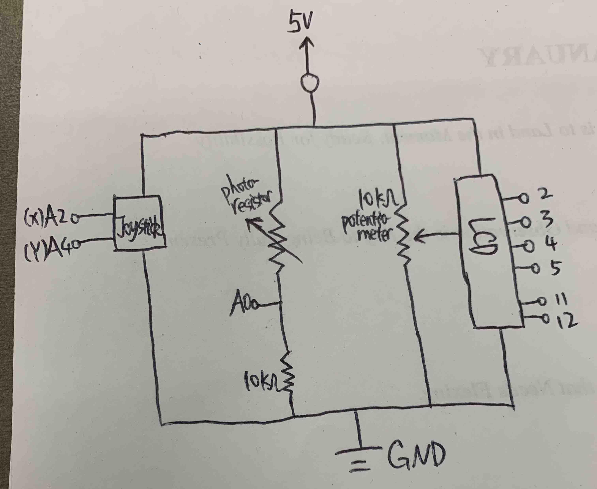
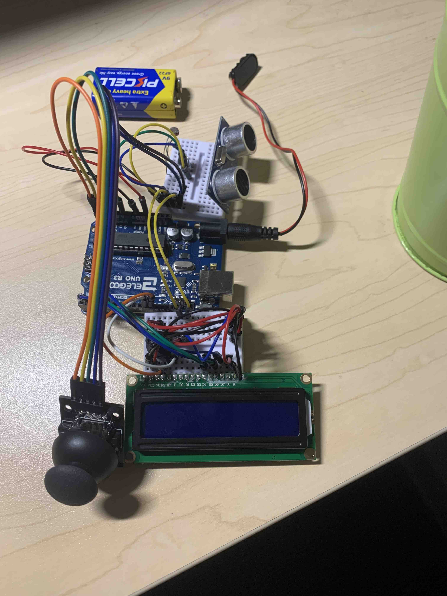

Cheng's Final Project - Emotional Support Robot!
Proposal

Project Concept & Motivation
I would like to build a multifunctional companion robot that emotionally supports people at work. The final product of my project is similar to what is presented here: https://www.amazon.com/ENERGIZELAB-LAB-Eilik-Intelligence-Interactions/dp/B09XGQMSMB/
Anticipated Bill of Materials
- Arduino
- Breadboard
- 9V battery power supply
- A body made from used materials
- LCD for message display (2,3,4,5,11,12)
- Buzzer for making sounds (7)
- Motion sensor to detect hands (9)
- Photoresistor on the head for petting (A0)
- Joystick for making emotions (A2,A4)
- Transistor for current limiting
Timeline and Contingency Plans
- By Feb. 28th, finish preparing the body. If anything goes wrong, finish the body before Mar. 2nd.
- By Mar. 5th, finish building the robot and coding. If anything goes wrong, finish this step before Mar. 7th.
- By Mar. 8th, finish debugging and the documentation. If anything goes wrong, finish this step before the presentation.
- On Mar. 9th, the final presentation.
Concept
As programmers, we often code on a computer for a long time alone in our office. We need some emotional support so that we no longer feel lonely. We also need some fidget toys to release our stress. So, I designed this emotional support robot that we can put on the side of our table and enjoying its company while we spend time alone. I hope that whenever an programmer needs support, they can quickly turn on the robot by connect it to a battery. To support the programmer emotionally, I thought of human's interaction with pets. We usually petting them on their head, and gently stroke their fur for enjoyment.
- LCD: display messages response to user's behavior. LCD will display "I am here!" when nothing happens.
- Photoresistor: detecting user's petting. LCD will display "I Love You!" when we cover the photoresistor through petting.
- Joystick: as a fidget toy controling display on LCD. LCD will display "Lift me up!" when the joystick is on the top-left position. LCD will display "Turn left!" when the joystick is on the bottom-left position. LCD will display "Turn right!" when the joystick is on the top-right position. LCD will display "Put me down!" when the joystick is on the bottom-right position.
- Ultrasonic sensor: not functional in the robot, just mimicking the eyes.
Technical Implementation

This is my schematic for the Final Project.

This is my circuit for the Final Project.
This is my video demo for the Final Project.
// Cheng Guo
// HCDE 439 - Final Project
// Reference 1: https://docs.arduino.cc/learn/electronics/lcd-displays
#include <LiquidCrystal.h> // include the LED code
// initialize Photoresistor, Joystick, and Ultrasonic Sensor
int photoResistor = A0; // set photo resistor input on pin A0
int median = 600; // set the median read from the photoResistor to 600
int xJoystick = A2; // set the x-axis input on pin A2
int yJoystick = A4; // set the y-axis input on pin A4
// initialize the library by associating any needed LCD interface pin
int rs = 12, en = 11, d4 = 5, d5 = 4, d6 = 3, d7 = 2;
// with the arduino pin number it is connected to
LiquidCrystal lcd(rs, en, d4, d5, d6, d7);
// the setup routine runs once when you press reset:
void setup() {
// initialize digital pins as input and outputs.
pinMode(photoResistor, INPUT); // set photo resistor input on pin A0
lcd.begin(16, 2); // set up the LCD's number of columns and rows
lcd.print("I am here!"); // print the state on LCD
}
// the loop routine runs over and over again forever:
void loop() {
// Adjust the trig pin before receiving pulse
digitalWrite(trig, LOW); // adjust the trig pin before receiving pulse
delay(2); // wait for 2 milliseconds
digitalWrite(trig, HIGH); // adjust the trig pin before receiving pulse
delay(10); // wait for 10 milliseconds
digitalWrite(trig, LOW); // adjust the trig pin before receiving pulse
// petting on the top of the robot
int photoInput = analogRead(photoResistor); // read the input from the photo resistor
if (photoInput < median) { // if the light input is small, then the owner is petting
lcd.clear(); // clean the LCD for display
lcd.setCursor(0, 0); // set the cursor to (0,0)
lcd.print("I Love You!"); // print the state on LCD
delay(1000); // delay for 1 second
} else { // if the light input is big, return to normal face
lcd.clear(); // clean the LCD for display
lcd.setCursor(0, 0); // set the cursor to (0,0)
lcd.print("I am here!"); // print the state on LCD
delay(1000); // delay for 1 second
}
// change the face output on LCD based on joystick inputs
int xInput = analogRead(xJoystick); // record input from x-axis
int yInput = analogRead(yJoystick); // record input from y-axis
if (xInput < 200 && yInput < 200) { // if the joystick is on the top-left
lcd.clear(); // clean the LCD for display
lcd.setCursor(0, 0); // set the cursor to (0,0)
lcd.print("Lift me up!"); // print the state on LCD
delay(1000); // delay for 1 second
} else if (xInput < 200 && yInput > 823) { // if the joystick is on the bottom-left
lcd.clear(); // clean the LCD for display
lcd.setCursor(0, 0); // set the cursor to (0,0)
lcd.print("Turn left!"); // print the state on LCD
delay(1000); // delay for 1 second
} else if (xInput > 823 && yInput < 200) { // if the joystick is on the top-right
lcd.clear(); // clean the LCD for display
lcd.setCursor(0, 0); // set the cursor to (0,0)
lcd.print("Turn right!"); // print the state on LCD
delay(1000); // delay for 1 second
} else if (xInput > 823 && yInput > 823) { // if the joystick is on the bottom-right
lcd.clear(); // clean the LCD for display
lcd.setCursor(0, 0); // set the cursor to (0,0)
lcd.print("Put me down!"); // print the state on LCD
delay(1000); // delay for 1 second
}
}
This is my firmwire for the Final Project.
I chose a 10KΩ potentiometer for the LCD. Based on the information from: https://maxpromer.github.io/LCD-Character-Creator/img/ArduinoUnoR3LCD.png,
{kind=link}
For the Voltage Divider, Vin = 10V, R2 = 10KΩ, R1 ranges from 200KΩ to 10KΩ according to https://cdn-learn.adafruit.com/downloads/pdf/photocells.pdf, so when R1 is 10KΩ, Vout = 10 / (10 + 10) * 5V = 2.5V, and when R1 is 200KΩ, Vout is 10 / (10 + 200) * 5V = 0.24V. Both scenarios are safe to operate.